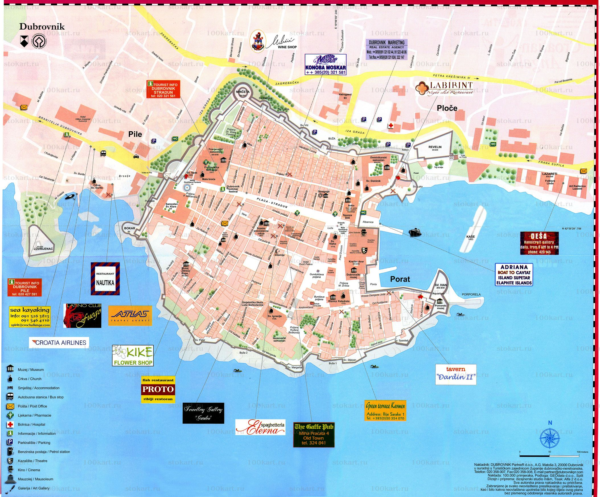
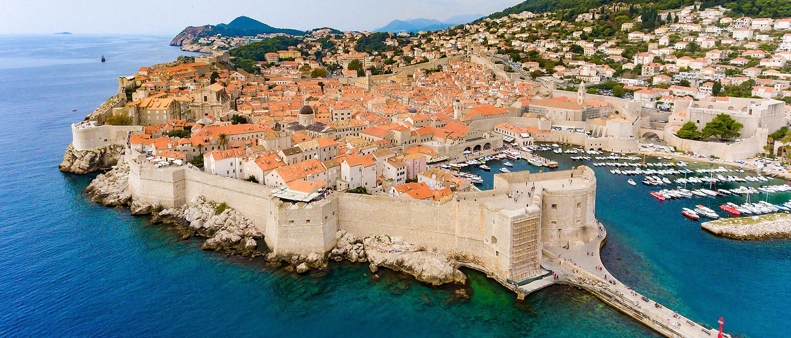

Местоположение

Дубровник (Dubrovnik; Ragusa, Рагуса) е град с древна история в най-южната част на Хърватия, на самия край на Дубровнишкия провлак. Селището е туристически център и главен град на Дубровнишко-неретванска жупания. Дубровник е наричан „Перлата на Адриатика“.
История
Дубровник (Рагуза) е основан при сливането на два града – Лаус, разположен на малък остров по южното далматинско крайбрежие, подслонил италианските бежанци от близкия град Епидаурум (днешен Цавтат), и Дъбрава, славянско селище в подножието на горист хълм.
Ивицата плитчини между двете части на града е засипана през 12 век, обединявайки селището около новопостроения площад (сега наричан Плаца или Страдун). Площадът е павиран през 1468 г. и съграден отново след земетресението от 1667 година. Градът е укрепен и две пристанища са построени на двата края на провлака.
От своето основаване през 7 век, градът е под защитата на Византия, но след кръстоносните походи Рагуза попада под венецианска власт, а според Задарския мирен договор от 1358 г. става част от Унгарско-Хърватското кралство.
Забележителности
Почитателите на историята ще изпаднат във възторг от всички забележителности и атракции в Дубровник, а близките плажове и острови предлагат широки възможности за забавление на любителите на слънцето и плажа.
Дори и кратко посещение в града ще ви помогне да разберете защо е наречен Перлата на Адриатика.

- Зашеметяващите сгради, облицованите с мрамор улици и невероятната атмосфера правят разходката в Стария град изключително приятна. Главната улица – Страдун, започва със стар манастир и завършва с красив площад.
- Страдун е прочутата пешеходна улица в стария град на Дубровник. Изградена е след голямото земетресение през 1667 г. Преди това там са се намирали сгради на благородници, а впоследствие сградите са с все така пищни фасади, но и са по-функционани.
- От векове кулата на крепостта Минчета се извисява над града и днес се е превърнала в един от символите на Дубровник. Първоначално е била по-малка и квадратна, построена през 1319 г., но през 1464 г. е променена и придобива сегашната си кръгла форма благодарение на прочутия флорентински архитект Мичелоцо Мичелоци.
- Крепостта Ревелин е издигната извън градските стени през XVI век, когато Дубровник е застрашен от Венеция. Крепостта е издигната много бързо, като всички други обществени и частни дейности са били прекратени, за да може цялото население да се включи в строителството.
- Големият фонтан на Онуфри се намира срещу Църквата на спасението. Създаден е от Онуфри дела Кава в чест на завършената водоснабдителна система на града през 1438 г.